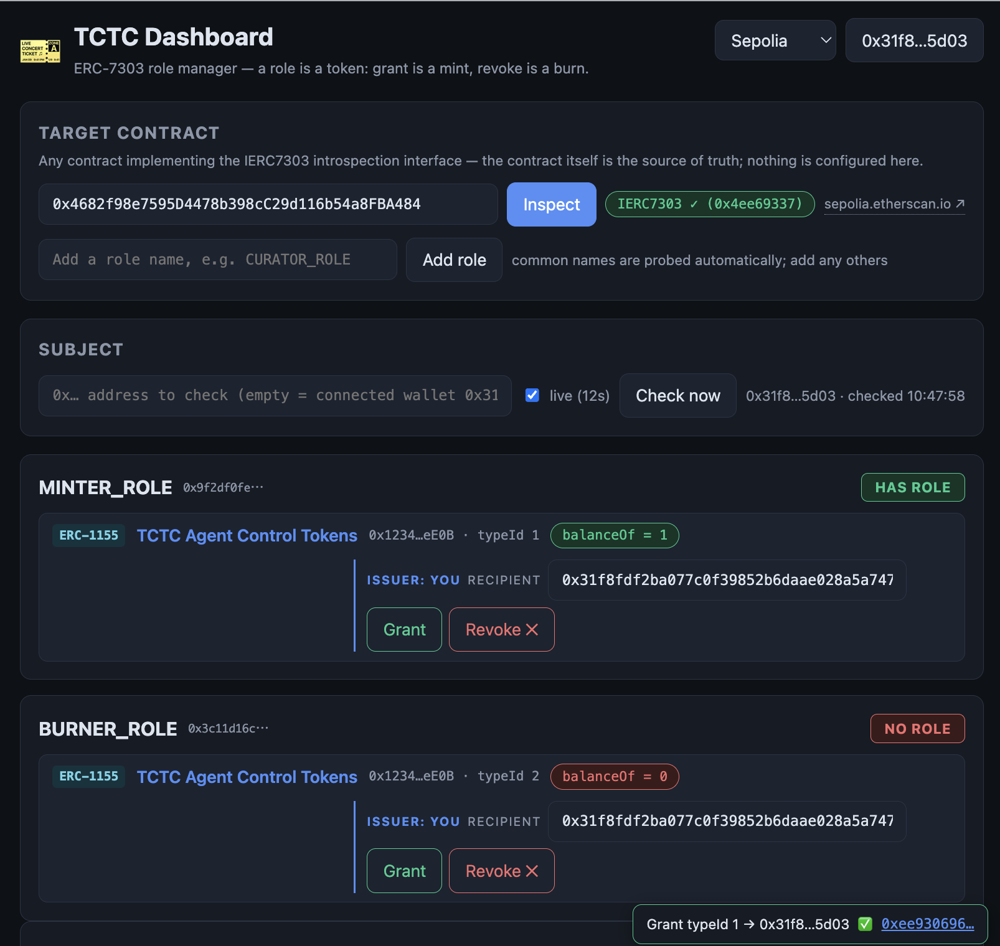

When an AI agent acts on your behalf, its authority should be something you can see, limit, and destroy — not a secret it carries. Token-Controlled Token Circulation (TCTC / ERC-7303) makes each permission an on-chain token: grant is a mint, revoke is a burn, and the chain — not a permission server — is the source of truth.
API keys and passwords were designed for software you trust completely. An autonomous agent is something new: fast, capable, and fallible — with your credentials in its pocket. Handing it a secret and handing it an on-chain token fail in very different ways.
balanceOf = 0 when time runs out — no transaction needed.ERC-7303 gates a target contract's functions with a modifier that asks one question: does this address hold the required token? Everything else — granting, auditing, revoking — is ordinary token mechanics that every wallet, explorer, and indexer already understands.
The issuer mints a control token — an ERC-721 or ERC-1155 certificate — to the holder. Soulbound variants stop delegation; expirable variants end it on a timer.
The target contract checks the balance at call time. Multiple certificates can OR into one role; multiple roles can AND across modifiers. Composition, on-chain.
The issuer burns the certificate — no holder cooperation needed. The very next call fails. This is the kill switch that makes delegation safe.
Delegating real capability to an AI agent needs an authorization you can revoke faster than the agent can act. TCTC gives an agent's wallet a role the same way it gives a human one — and takes it back with one burn, or lets it expire with no transaction at all.
balanceOf = 0 once the clock runs out — a forgotten revocation
revokes itself.TCTC is recursive: the circulation of a token is controlled by another token, whose circulation can itself be token-controlled. The recursion bottoms out at the innermost layer — a single issuer key. Trust flows outward, and can be cut at any layer.
The innermost layer: certificate issuance governed by onlyOwner
alone. A single key (or a multisig) that can always mint — and always burn.
Soulbound ERC-1155/721 tokens representing qualifications: MinterCert, MemberPass, an expiring contractor badge. One collection can serve many targets.
Targets declare which certificates satisfy which role (introspectable via ERC-165). OR within a role, AND across modifiers — policy lives in the target.
The outermost layer: whoever holds the token can act — an employee, a partner, an autonomous agent — until expiry or the issuer's burn says otherwise.
The TCTC Dashboard makes the whole model clickable: inspect any ERC-7303 contract, watch role verdicts and balance evidence live, grant and revoke as the issuer, and deploy new certificate collections straight from a browser wallet. Not just for AI delegation — any on-chain permission, managed like tokens.

Live on Sepolia — roles, evidence, and issuer controls in one page. Click to open.
The original scheme — presented at the 8th USENIX Security Symposium: a ticket's circulation governed by another ticket, decades before blockchains made tickets programmable.
The idea lands on Ethereum: a standard interface for gating token actions with token ownership, using plain ERC-721/1155 certificates as roles.
Machine-readable introspection joins the spec; the MCP server, expiring certificates, and the dashboard turn TCTC into a working permission platform for humans and autonomous agents alike.